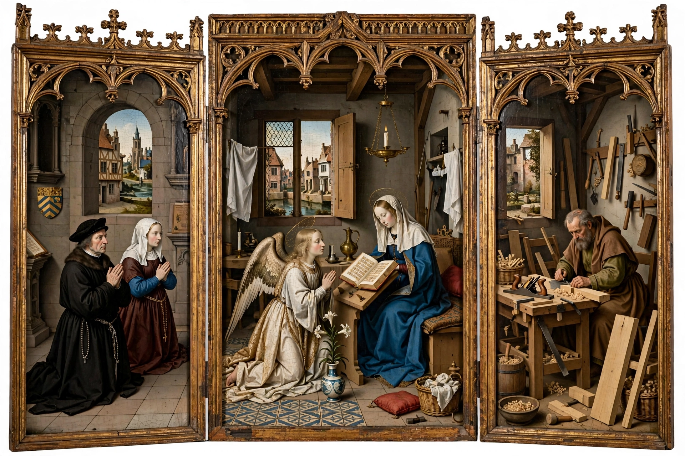

Mérode Altarpiece
From Wikipedia, the free encyclopedia
| Artist | Workshop of Robert Campin (attributed) |
|---|---|
| Year | c. 1427–1432 |
| Medium | Oil on oak panel |
| Location | The Cloisters, Metropolitan Museum of Art, New York |

The Mérode Altarpiece (or Annunciation Triptych) is an oil-on-oak panel triptych of the Annunciation, attributed to the workshop of the Early Netherlandish painter Robert Campin and dated to about 1427–1432. It is among the most celebrated works of early Flemish painting and has been in the collection of The Cloisters, New York, since 1956; it is named for the Mérode family of Belgium, who owned it in the 19th century.
Description
The central panel shows the Annunciation set not in a church but in a contemporary Flemish domestic interior: the Virgin, reading, is visited by the Archangel Gabriel, while everyday objects — a vase of lilies, a freshly extinguished candle, a brass laver — carry symbolic meaning (so-called "disguised symbolism"). The left wing shows the donors, identified with the Mechelen merchant Peter Inghelbrecht and his wife; the right wing shows Saint Joseph in his carpenter's workshop, making mousetraps — a metaphor, drawn from St. Augustine, for the Crucifixion as God's trap for the Devil.